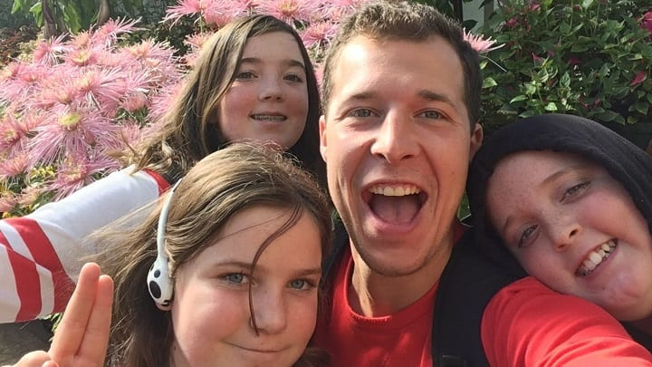

A Quick Update
Normally I try to write on topics beyond myself, but seeing as this site is a hub for my adventures I want to give a quick heads up about some exciting stuff on the horizon.
First, in just a couple days I’ll be leaving my au pair family and New Zealand. This is hardly exciting: it’s been a wonderful eight months, and the hardest goodbyes are going to be my three favorite kiwis—Rowyn, Peter, and Talia. If you three read this, thank you for all the fun and purpose you’ve given to my life. Youdabes.
As our paths divert, my path will reconnect with a good friend, Sprout, who I met on the AT in 2014. Starting August 9th, the two of us will try to tackle the Sierra High Route (SHR) in California. The SHR has been high on my list ever since I first hiked through the Sierras on the PCT, so I’m excited to spend August in John Muir’s backyard. This route will be very different from my previous hikes—lots of cross-country travel, navigation, and talus fields requiring a higher skill level and near-perfect decision making. I’m eager for the challenge and expect the SHR to really expand my skill set.
The fun doesn’t stop there, because in September my Dad and I will fly to Peru to hike to Machu Picchu via Choquequirao. The ruins have been high on my dad’s bucket list for decades—I’m excited to share in the experience with him.
For both of these adventures, tracking via my SPOT device will be live again. Unlike previous hikes, I’ll have it embedded directly into the homepage, along with any pictures I post and hopefully text updates (compliments of Twitter). It’s nothing too crazy, but hopefully a little more convenient for friends, family, and prospective stalkers. If you see any mistakes with the display, or want to contact me, please do so. I’ll be back to posting and planning for new adventures come October.